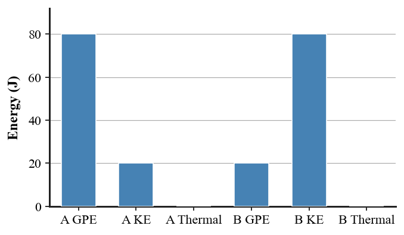
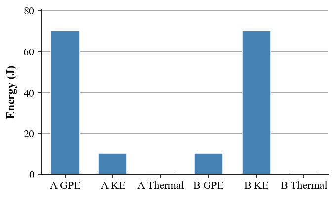
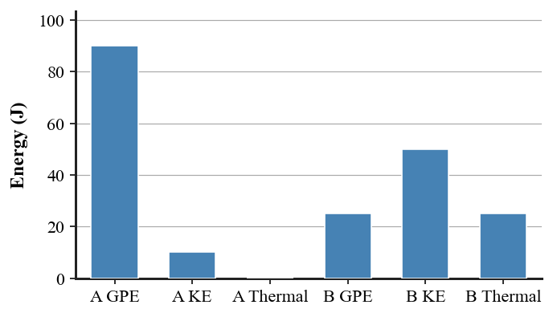
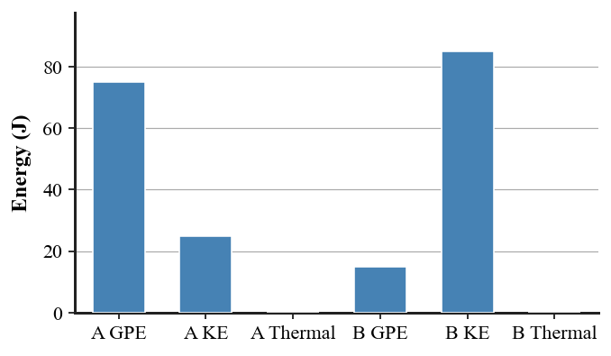
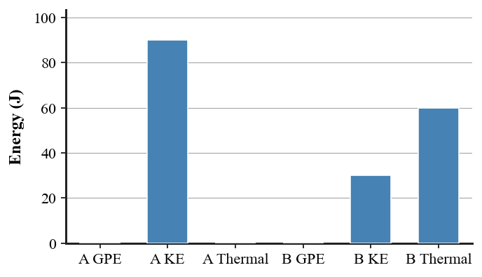

Unit 4 DOK 2.4 Energy Bar Chart Interpretation V3
Name:
Show work and mark answers clearly.

A sliding object slows. Use the bars to describe where the mechanical energy goes and whether total energy is conserved.

The six bars show a coaster at State A and State B. Identify the main transformation from A to B and determine whether total energy is conserved.

Use the bar chart for a pendulum. Which energy form increases, which decreases, and what happens to the total?
A sliding object slows. Use the bars to describe where the mechanical energy goes and whether total energy is conserved.

Compare the two states. Identify the transformation and explain the nonzero thermal-energy bar in State B.

Complete this sentence from the evidence: “The system changes from mostly ______ energy to mostly ______ energy while total energy ______.”

Rank the three energy forms in State B from greatest to least, then compare the total energy of A and B.

A student says the missing mechanical energy was destroyed. Use the bars to decide whether the claim is supported.

Use the bar chart to identify which state is higher on the track and which state is moving faster, then state the energy-conservation pattern.